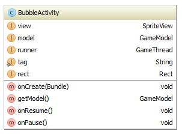
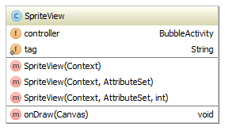
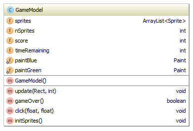

This lab introduces some of the main ideas necessary for writing real-time apps such as 2D video games (3D Android games normally used OpenGL ES, and are beyond the scope of this course.)
Real-time apps usually involve two threads: the User-Interface (UI) thread which performs the event handling (including the on-touch events to handle user interactions, for example), and a separate app-specific thread to handle the app updating: we call the the app thread. This differs from the LightsOn puzzle we studied previously which was entirely UI event driven (apart from the Splash Screen which used an AsyncTask).
As before, it is a good idea to separate the model from the view, so typically the app thread will run a loop which repeatecly updates the model, redraws the view, then sleeps for a specified time interval until it is time for the next update / redraw cycle.
But wait! Have you spotted a potential problem already? Remember that only the UI thread can directly update a view, so how can we get around this? There are two main solutions:
The first method is the simplest and is the one we choose for this lab. The only disadvantage is that the movement can be slightly jerky. Why do you think this is?
The second method would be the method of choice for any app where smooth movement mattered. It is a bit more complex, and we'll cover it later in the course.
We'll study these ideas in the context of a simple game: Bubble Game. The aim of Bubble Game is to pop the green bubbles by tapping them while avoiding the blue bubbles. To make it slightly interesting, the bubles move and are of several different sizes. A screenshot is shown below:
The rules are as follows:
The model shows the following classes:

The diagram shows the "HAS-A" relationship betweem the classes i.e. which classes have an instance variable referring to which other classes. We'll give an outline of each of these now. Note that the Sprite class is used to model each individual bubble: this could equally well have been called Bubble. The diagram is automatically drawn and has some limitations: for example, the GameModel has a list of N sprites, not just 1 as suggested by the model. Nonetheless it is useful for conveying the main ideas.
The BubbleActivity class is the entry point for the app and acts as the controller: its fields and methods are shown below (in these diagrams, produced automatically from the Java code using the Intellij Diagram Tool (to open this right-click a class in the project view and click the "Diagram" item).
As also shown on the classes diagram above, BubbleActivity has references to the view and the model. As is normal, it overrides the onCreate method. It also overrides onResume and onPause: it is in these methods that the GameThread is created and killed respectively.

Question: What does the diamond indicate on the field or method symbols? (for example, the tag field in the diagram above has a diamond overlaid on it).
The size of the view is not available until the view has been created and displayed. The model needs to know this since the bubbles move in a toroidal wrap-around world. The solution I've adopted here is to set this up when the GameThread is running. GameThread is defined as an inner class of BubbleActivity: this gives it convenient access to all the methods and fields of BubbleActivity. GameThread extends Thread and has a simple class diagram. It does all it's work in a run method, which loops while running is true.
Question: why does GameThread use a boolean variable to decide when to stop? (a Thread stops when its run method exits). Why do we not simply stop the GameThread directly with a call to stop() ?

The SpriteView class as provided is very simple. It extends View and has one simple method: it overrides onDraw. This method works by calling the getModel method of the controller (the parent Activity). It then iterates over all the Sprites (Bubbles) in the model, and calls the draw method of each one.

Note: currently the SpriteView class is missing the event handling method(s). You'll add this / these as part of the lab exercise.
The GameModel class handles the top-level game logic, while delegating lower level aspects to the Sprite class. It has an ArrayList of sprites to store all the bubbles and other fields to keep track of the score and the time remaining. It has a click method which should be called when a click event is received by the View.
The initSprites methods initialises the list of nSprites, and equal number of blue and green ones. For this purpose it has static fields for blue and green Paint objects.
Question: Having platform-specific graphics-related classes like this in the model is not ideal: can you think of a better way of modelling this?

Sprites are movable objects that may also have utility methods for handling collisions. In our simple game the bubbles do not collide with each other, but instead have a contains method which is used to test whether a point (clicked by the user) lies within the Sprite.
Each sprite is modelled as having a position (s) and velocity (v). Since this is a 2D game, position and velocity are two-dimensional vectors. There is a separate Vector2d class (see below) which handles all the calculations for these. The size is specified as a radius (rad). Each Sprite has a score and a foreground Paint object (fg) for drawing itself. Respawn will reset the position and give the sprite a new random velocity. The getScore method returns the number of points this sprite is worth.

Vector2d is a utility class that's useful for almost any 2D game. For now the main methods of interest are:
Now download the .zip file and either open the Intellij project or import it into the IDE of your choice (note, even for Intellij you'll probably need to set up the SDK).
Spend some time reading through the code until you have a good understanding of it. Then attempt the exercise below.
The app as supplied in the .zip file moves creates the bubbles and moves them around the screen, but does not actually function as a game.
Fix the following aspects to make a simple but functional game:
As an optional additional exercise (more difficult) change the game mechanic from picking to slicing: in order to get rid of a bubble you now have to slice through it.